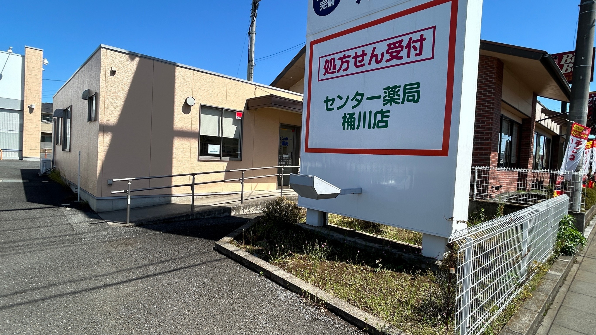

Scroll
About Us
センター薬局 桶川店について
地域に根ざした医療
近隣医療機関の処方箋はもちろん、地域の皆様の健康相談窓口として頼れる存在を目指しています。ご自宅や施設へ薬剤師が伺う「訪問服薬指導（在宅医療）」にも力を入れています。
最新設備の導入
自動分包機やクラウド型薬歴システムなどの最新設備を導入。業務効率化により患者様をお待たせする時間を短縮し、より丁寧な服薬指導を実現しています。
専門的なサポート
お薬の飲み合わせや副作用への不安など、どんなことでもご相談ください。経験豊富な薬剤師が、一人ひとりの患者様に寄り添ったサポートを提供します。
Our Services
スムーズな調剤と
スムーズな調剤と
安心のフォローアップ
当薬局では、患者様がストレスなくお薬を受け取れるよう、様々な取り組みを行っています。処方箋の事前ネット受付にも対応しています。
- ✓ 全国すべての医療機関の処方箋を受付
- ✓ 薬剤師がご自宅へ直接伺う訪問服薬指導
- ✓ 一包化による飲み忘れ防止サポート
- ✓ お薬手帳の活用と丁寧な指導
- ✓ 車椅子の方も安心のバリアフリー設計
☁️
クラウド型薬歴システム
過去の服薬履歴やアレルギー情報を等、データを安全かつ瞬時に確認。より正確でスピーディーな調剤を実現します。
💊
自動分包機
清潔に、正確に。調剤の待ち時間を大幅に削減し、より多くの時間を患者様との対話にあてています。
Store Info
店舗情報・アクセス
所在地
〒363-0028
埼玉県桶川市下日出谷西3-3-4
電話番号
FAX番号
048-782-6143
アクセス
JR高崎線「桶川駅」から車で約10分。駐車場完備。
営業時間
| 曜日 | 月 | 火 | 水 | 木 | 金 | 土 | 日・祝 |
|---|---|---|---|---|---|---|---|
| 9:00〜13:30 | ○ | ○ | ○ | ○ | ○ | ☆ | 休 |
| 14:30〜18:00 | ○ | ○ | ○ | ○ | ○ | 休 |
※土曜日は 9:00〜13:00 の営業となります。
サービス向上のため、口コミをご投稿ください
当薬局をご利用いただきありがとうございます。皆様からの貴重なご意見・ご感想が、私たちの励みになり、より良いサービス提供へとつながります。スマートフォン等から、ぜひGoogleマップの口コミ投稿にご協力をお願いいたします。
Googleで口コミを書くスマホで読み取る